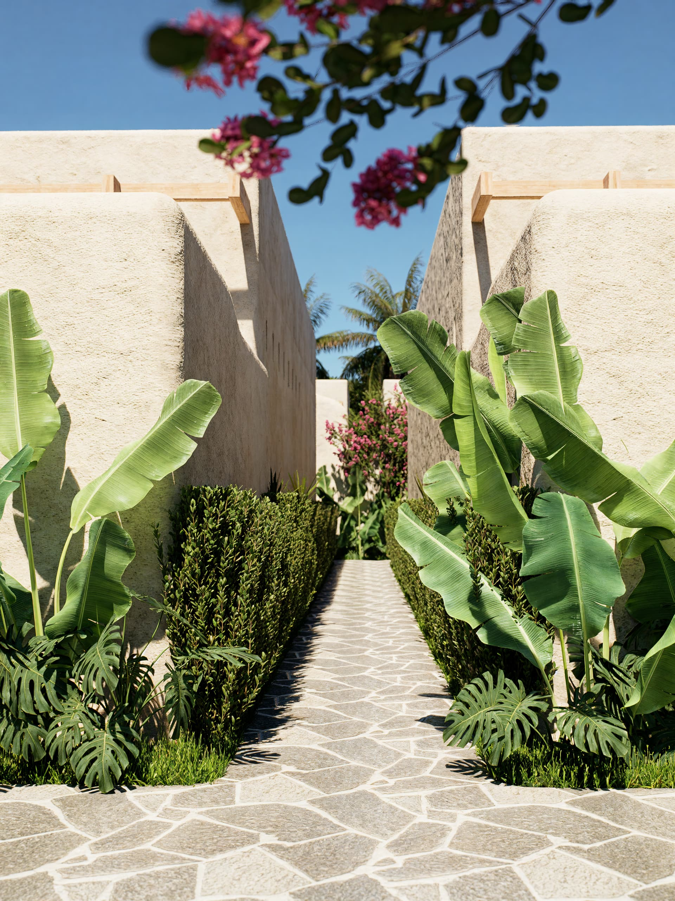
About Casa Brava
Kuta Mandalika, Lombok A house meant for two that ended up as a hotel of nine villas and six suites.
We didn't want another hotel. We wanted a different way of being in a place.
It all began with the idea of leaving Kuta Mandalika as we found it and building without arguing with the landscape. The initial idea was small. The land we ended up buying, not so much.
A plot of land in Lombok, four coffees a day and no rush to finish.
There was no fixed plan from day one: there were site visits, plenty of coffee and a desire to get it right before finishing fast. Our first investment on the island, built slowly and by hand, to last.
There is nothing here we wouldn't choose for our own home.
We wanted a home for ourselves. We ended up building a place to share.
What began as a plot for our own home became the biggest project we've ever built: nine villas and six suites designed so that others could live exactly what we were looking for.
Alba & Felip
We have spent years travelling, living in villas and sharing the places that inspired us most. Casa Brava brings together what we fell in love with: the architecture, the calm and the closeness of the sea.
It was not born in an office. It was born from having lived, again and again, a feeling we now want to share.
-
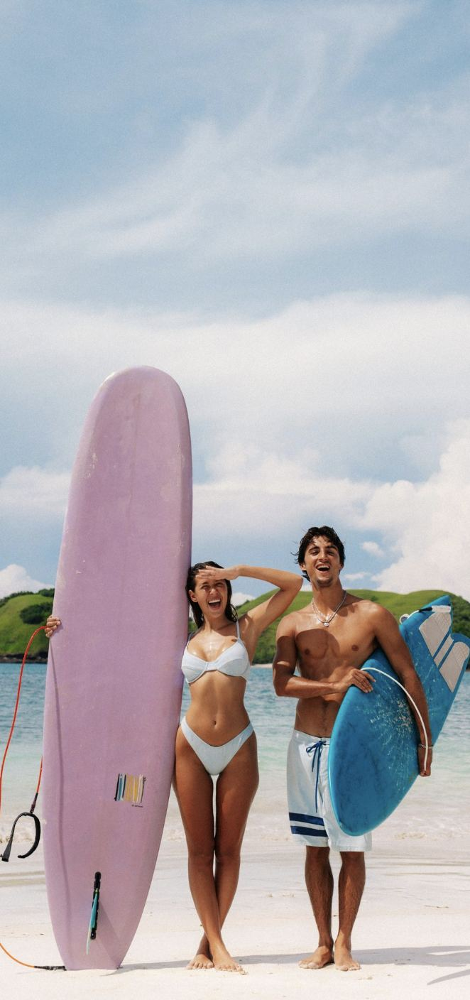
-
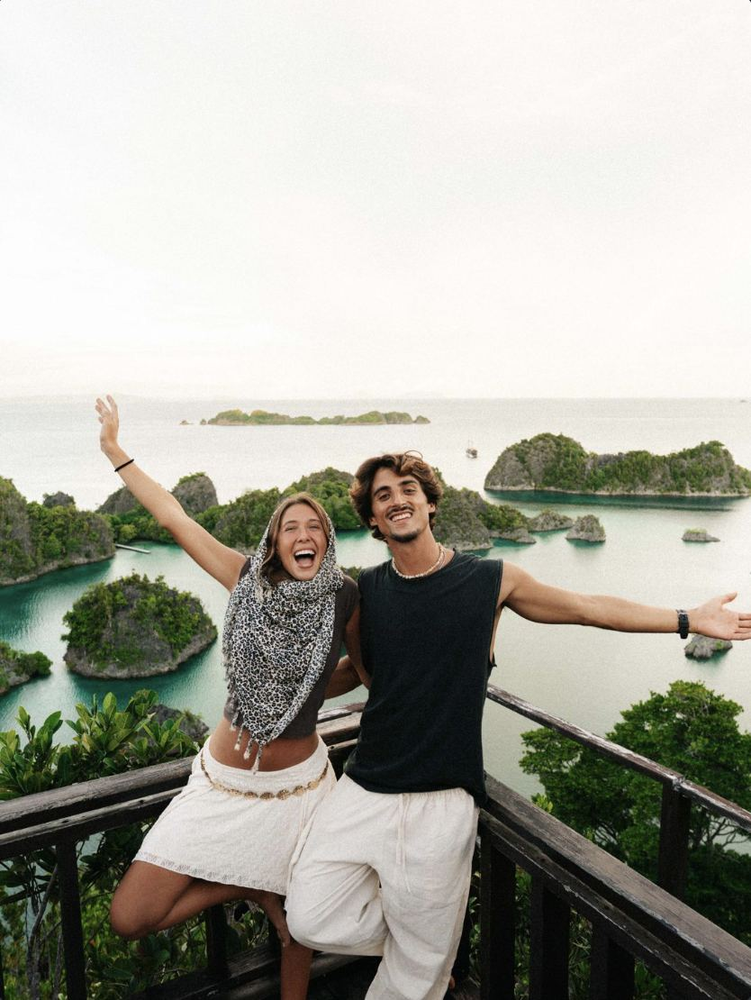
-
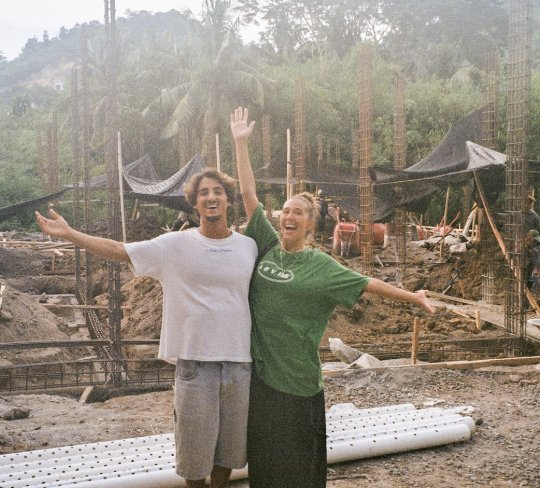
-
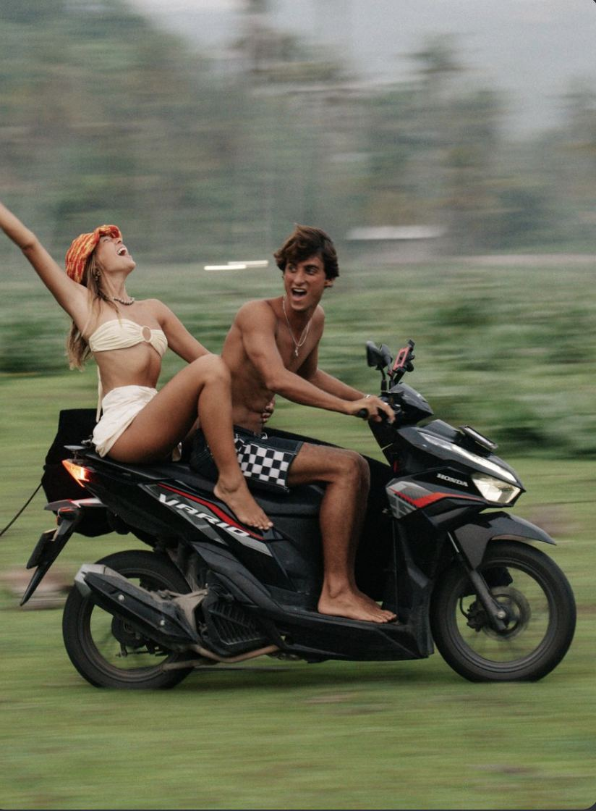
Alba Perarnau & Felip Vives
Everything that touches the skin comes from the island.
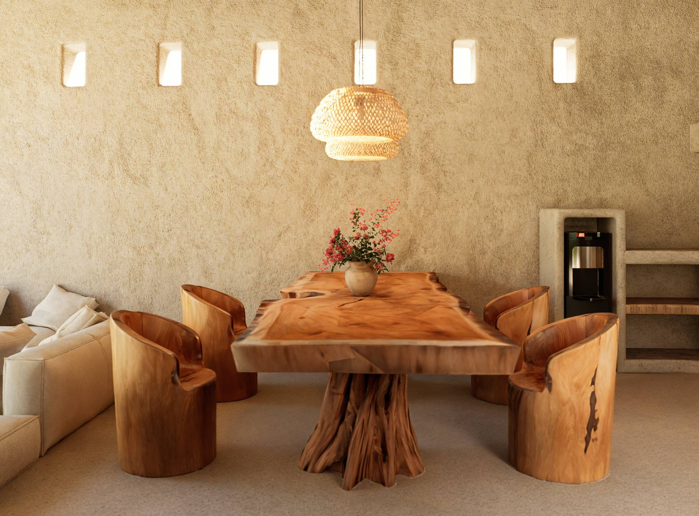
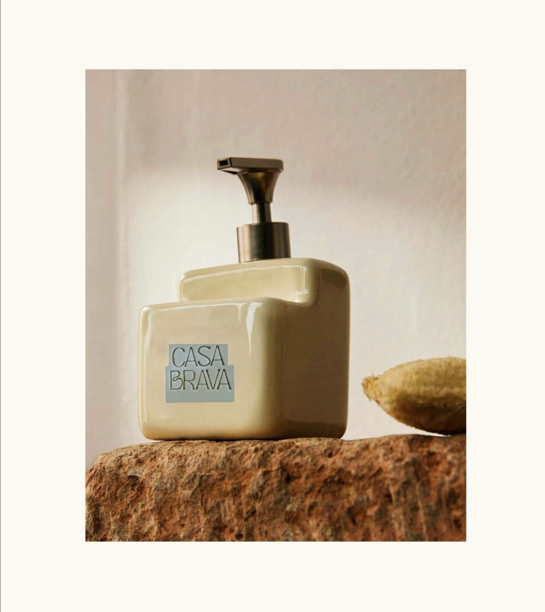
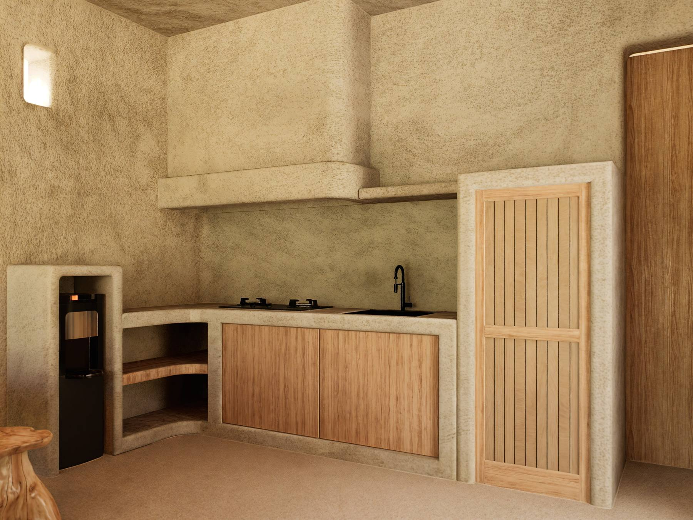
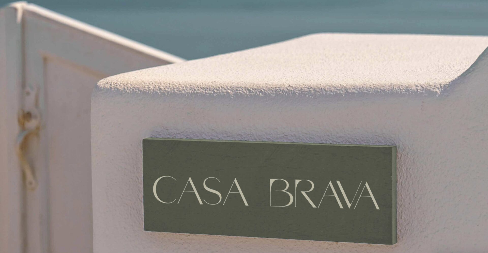
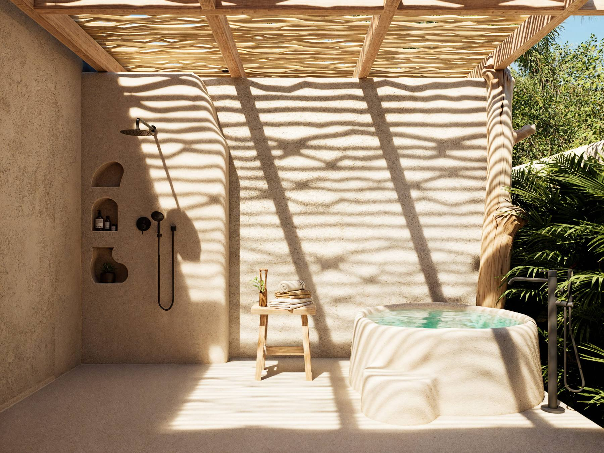
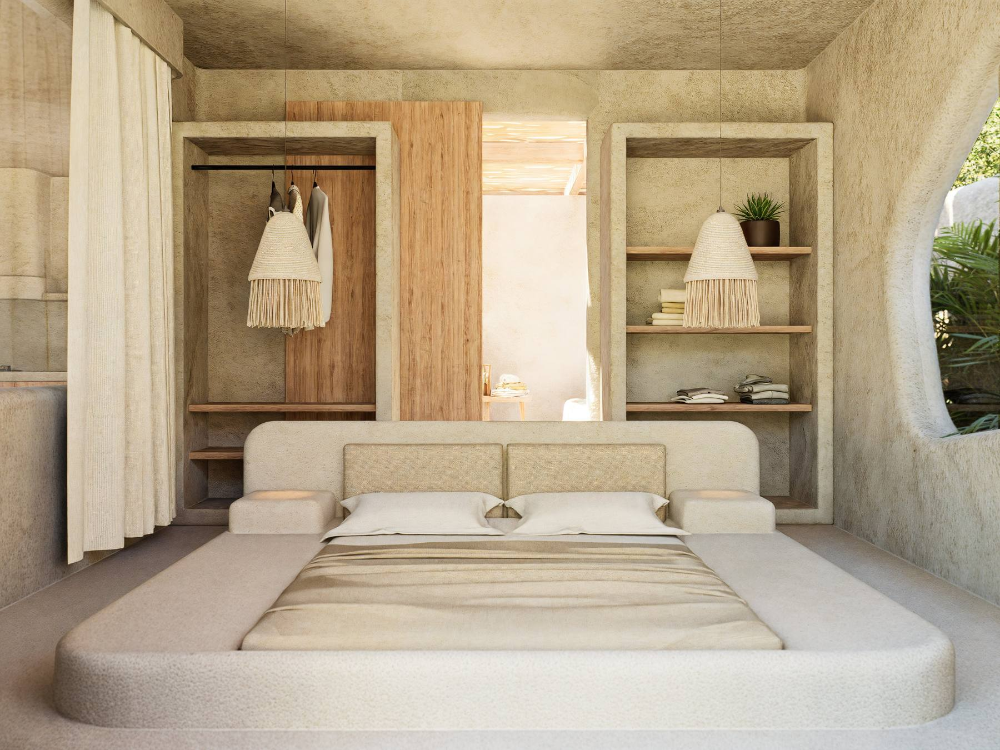